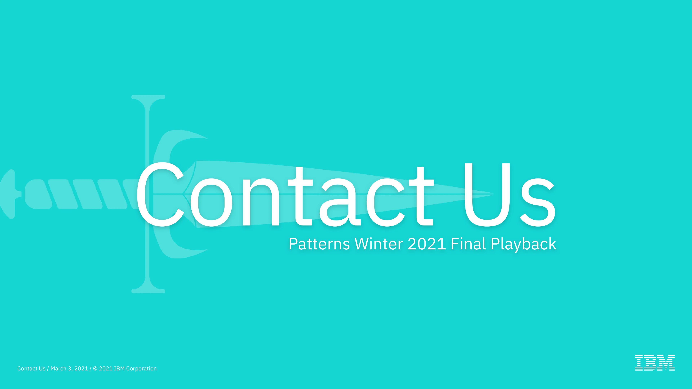
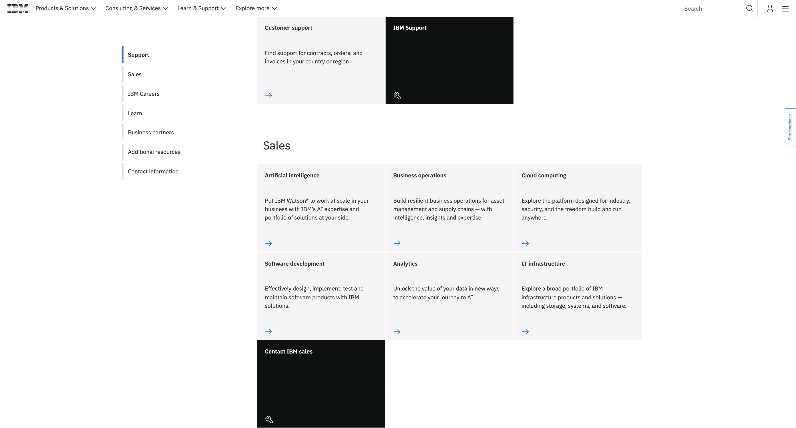
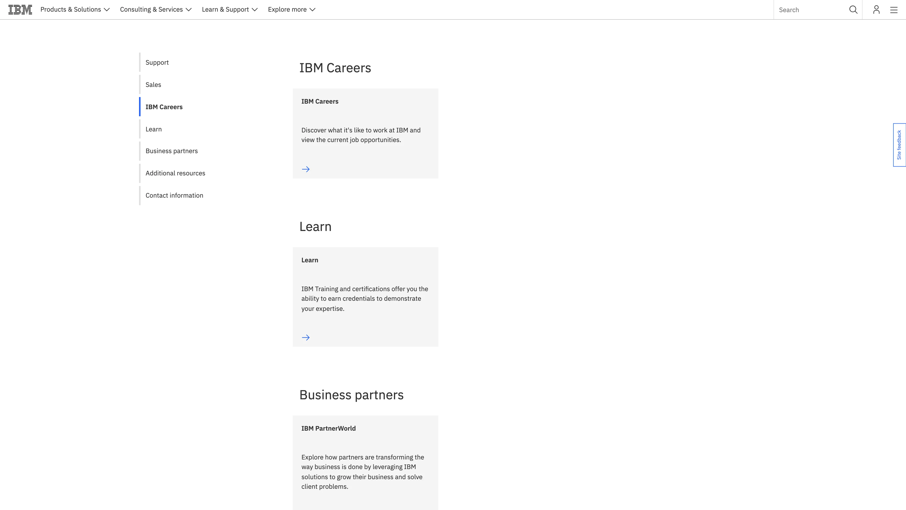
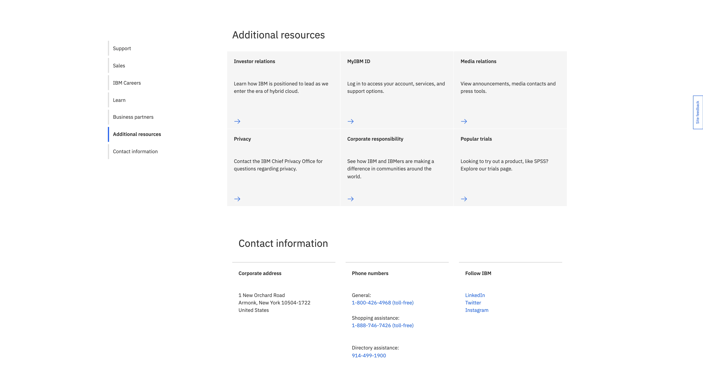
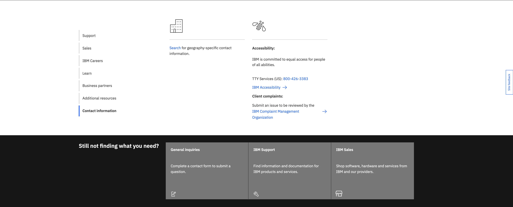
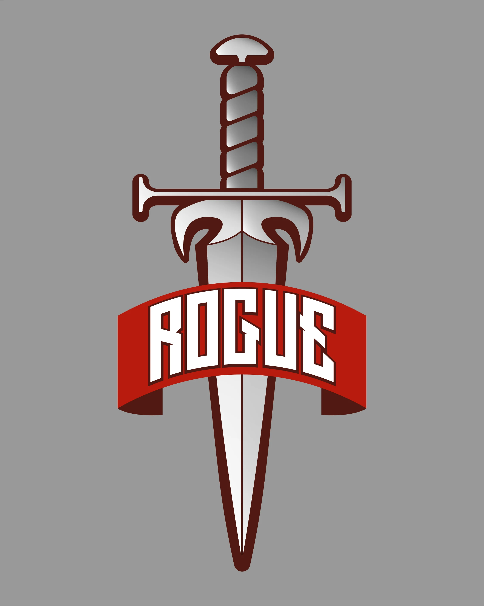

Product Design
IBM Patterns: Contact Us
A six-week sprint inside IBM's Patterns design education program — reimagining the flagship Contact Us experience on IBM.com so every visitor could find the right person, fast.

The Problem
IBM's Contact Us page was drawing massive traffic — and converting almost none of it into actual connections. Over six months, the page logged 135,000 unique visitors and 13,000 form submissions. Nearly all of those submissions went nowhere: misdirected to wrong inboxes, dead ends, or support queues that never followed up.
Multiple competing contact pages across IBM.com each claimed to be the entry point, but none of them actually routed users to the right place. The experience was built to look like the rest of IBM.com — not to do what users came there to do.
135k
Unique visitors in 6 months
13k
Form submissions — most going nowhere
"The IBM contact us page is constructed to be like IBM.com, not like what users need."
IBM Patterns
IBM Patterns is a six-week design education program that brings early-career IBM designers together under mentorship to tackle a real, sponsored project using Enterprise Design Thinking. Think of it as a design school sprint inside a Fortune 500 — full research-to-prototype process, real stakeholders, real constraints, and a final playback to IBM leadership.
Our team of five took on the Contact Us project — a problem that had been overlooked for years despite being one of IBM's highest-traffic entry points.
Research & Framing
We built two personas to anchor the research: Bradley, a developer at a large IBM customer account trying to resolve a technical issue, and Paige, a small business CEO looking to speak to a sales representative. Both hit the same wall — a generic form with no clear path forward, no routing, and no confidence that anyone would respond.
User research surfaced the same tension from every direction: people expected a fast, self-directed experience. Instead they got a page that pushed them toward a contact form as a first resort, not a last. One user put it plainly: "There is no excuse to not do personalized experiences for someone who has been to IBM.com before."
How might we help visitors contact the right team at IBM, quickly routing sales or support inquiries and diverting low-quality form submissions?
The Design
We restructured the entire contact experience around a persistent side navigation: Support, Sales, IBM Careers, Learn, Business Partners, Additional Resources, and Contact Information — each unfolding into clear subcategories with direct CTAs. No dead ends. No ambiguity about where a given request would land.
The landing page led with a hero — "Contact IBM. We're here to help." — backed by a photo to establish warmth and trust before routing users through topic-based icons. Sales inquiries were immediately flagged for virtual agent routing. Developers could self-direct to documentation. Every path had a destination.




Testing & Iteration
User testing confirmed the structure worked. People found the category breakdown intuitive — it reflected their own mental models for how to reach IBM. The hero image increased trust. Having multiple contact options alongside self-service directions covered a range of needs without forcing everyone down the same path. We refined the tertiary labels and tightened the form based on feedback before locking the MVP.
Outcome
The MVP shipped with new primary category icons, a frequently-requested information section, and immediate sales inquiry routing to a virtual agent. Short-term: fewer misdirected submissions, clearer paths for revenue-generating inquiries, and a self-service track for technical users who just needed documentation. Long-term: a foundation for a unified global IBM contact experience — with the groundwork for AI-driven personalization ready for Phase 2.
The contact page had always been a missed opportunity. We closed it.
